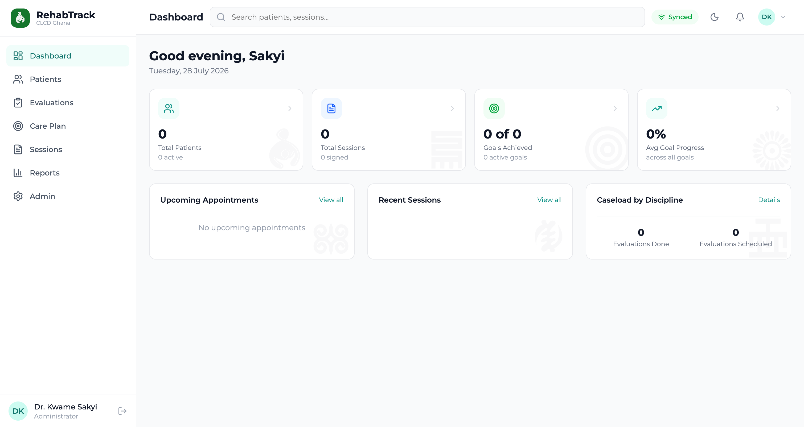
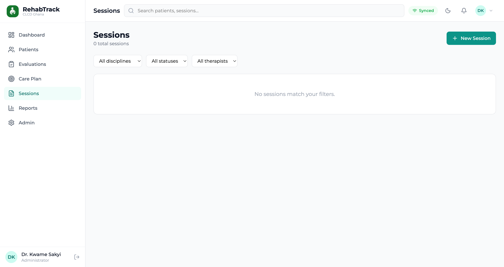
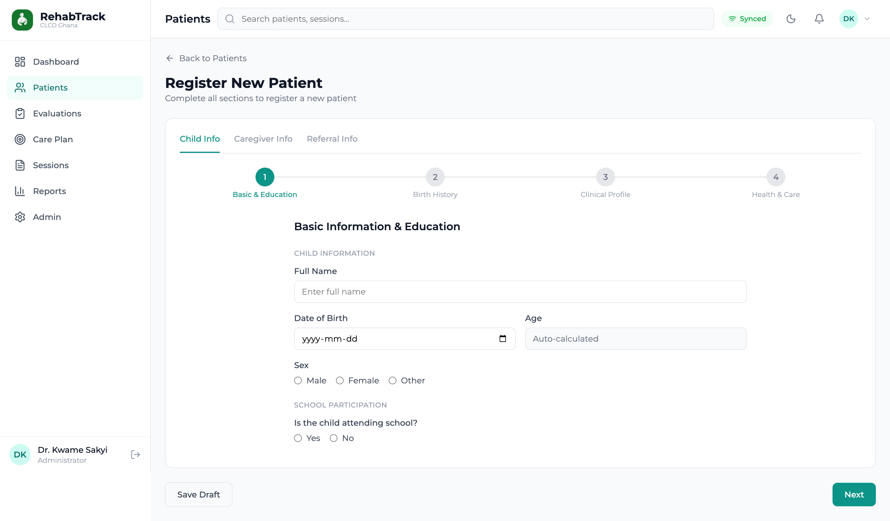
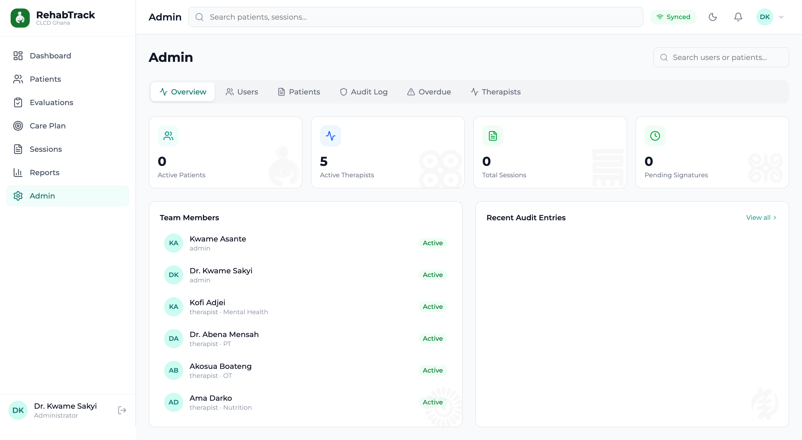

Overview
RehabTrack is an offline-first electronic medical record (EMR) I designed and directed for CLCD Ghana — Cerebral Palsy Therapies on Wheels, a mobile clinic program that delivers pediatric rehabilitation therapy to children with cerebral palsy across communities in Ghana. The system addresses a specific clinical problem: coordinating a multidisciplinary care team around a single child — and keeping accurate, signable clinical records — in field settings where internet connectivity is unreliable or absent.
The result is a single progressive web app that installs on the tablets clinicians carry into the field, works fully offline, and syncs to a permission-controlled cloud backend when a connection returns. It gives therapists a shared view of each child's goals and progress, gives administrators oversight and an audit trail, and gives the organization a documented, ownership-agnostic system it can run and hand off itself.
The Problem
Delivering therapy "on wheels" means the work happens where the children are — in homes, schools, and community sites — not in a clinic with stable Wi-Fi. Any records tool that assumes a live connection fails the moment the team drives out of range.
Pediatric CP rehabilitation is also inherently multidisciplinary. One child is seen by physiotherapy, occupational therapy, speech, mental health, and nutrition — each discipline setting its own goals and writing its own notes, but all working toward one shared care plan. Off-the-shelf EMRs are built around single-clinician encounters and urban infrastructure; they don't model shared, discipline-scoped care, and they aren't priced or shaped for a small nonprofit program.
Before RehabTrack, coordination lived in paper files and spreadsheets: progress was hard to see across disciplines, clinical notes weren't reliably signed, re-assessments slipped, and there was no safe, automatic backup of sensitive children's health data.
The Solution
I designed RehabTrack as one installable app backed by a permission-aware cloud service, structured around three layers:
- RehabTrack PWA (React + TypeScript): The single interface for the whole team, installable on Android tablets and desktop browsers. Seven modules — Dashboard, Patients, Evaluations, Care Plan, Sessions, Reports, and Admin — all reading and writing through a local cache so the app is fully usable with no connection.
- Supabase Backend (Postgres + Row-Level Security): The source of truth. Row-Level Security enforces scope-of-practice in the database itself: therapists edit only records in their own discipline and can view the rest; administrators see everything. Every write is captured in an audit log.
- Offline & Backup Infrastructure: An IndexedDB/Dexie cache with a write queue that syncs on reconnect, plus a scheduled Edge Function that exports the database nightly, encrypts it, and stores dated copies in Google Drive with a configurable retention window.

Dashboard — precise KPIs separating goals achieved from average progress
Design Process
This project started from clinical workflow, not from a feature list. I mapped how a child moves through the program — intake and registration, evaluation, a multidisciplinary care plan, recurring therapy sessions, progress tracking, and periodic re-assessment — and asked at each step: who is allowed to do this, what has to survive an outage, and what has to be legally defensible.
From that mapping I set the core requirements:
- Every core screen must read and write offline, then reconcile when connectivity returns
- Permissions must reflect real scope of practice — a therapist can't edit another discipline's clinical notes
- Session notes must be signable, with a clear draft-versus-signed state and a full audit trail
- The interface must be usable on a tablet in the field by clinicians, not just at a desk
- Sensitive children's health data must be backed up automatically and recoverably
- The organization must be able to own, run, and hand off the system without depending on me
I designed the module structure, screens, and interaction flows, then directed the build with AI-assisted development tools — serving as product designer and director, defining what to build and how each interaction should behave, and driving the work in reviewable stages so each module was verified before the next was built on top of it.

Patient registration — a guided, multi-step intake flow
Key Design Decisions
- Offline-first, not offline-tolerant: The local cache is the primary read source and writes go through a queue, so the app behaves identically in a connected clinic and a disconnected home visit. A persistent header indicator makes state honest — Synced, Syncing, or Offline — so no one is unsure whether their note has left the tablet.
- Discipline-scoped permissions in the data layer: Scope of practice is enforced by Row-Level Security in Postgres, not just hidden in the UI. Edit-versus-view affordances follow the same rules, so what a clinician can see and what they can change always match their role and discipline.
- Signable clinical records: Sessions use structured SOAP notes (Subjective, Objective, Assessment, Plan) with a Draft/Signed state and an e-signature capturing the signer's name, credential, and timestamp. Pending signatures surface on the dashboard and in Admin so nothing sits unsigned.
- Honest about clinical scoring: Instruments like GMFM-88 carry real scoring methodology I wasn't going to fabricate. Evaluations store raw, maximum, percentage, and notes generically, and any instrument-specific scoring is explicitly flagged as pending therapist confirmation rather than invented. Getting the clinical math right is CLCD's call, and the system is designed to defer to them.
- Precise metrics over flattering ones: The dashboard deliberately separates "goals achieved (N of M)" from "average goal progress (%)," so steady progress on long-term goals never reads as failure just because few are marked complete. Information design here is a clinical-morale decision.
- Culturally grounded, calm visual language: A deep-teal and warm-neutral palette with restrained Adinkra-inspired motifs keeps the tool professional and specific to its Ghanaian pediatric context rather than a generic medical template.

Sessions — filterable SOAP log with draft and signed states
Technical Architecture
┌───────────────────────────────────────────────────────┐
│ Supabase Cloud │
│ ┌────────────┐ ┌───────────┐ ┌────────────────┐ │
│ │ Postgres │ │ Auth │ │ Edge Fn │ │
│ │ + Row-Level│ │ (Email / │ │ (nightly │ │
│ │ Security │ │ Google) │ │ cron backup) │ │
│ └─────┬──────┘ └─────┬─────┘ └───────┬────────┘ │
│ │ │ encrypted export │
│ └────────┬───────┘ │ │
│ │ sync + audit log ▼ │
└─────────────────┼─────────────────────────┼───────────┘
│ │
sync / queue│ ┌────────┴─────────┐
│ │ Google Drive │
┌───────────┴──────┐ │ encrypted, │
│ RehabTrack PWA │ │ dated backups, │
│ React + TS │ │ retention window│
│ │ └──────────────────┘
│ IndexedDB cache │
│ + write queue │
│ │
│ Android tablets │
│ (mobile clinic) │
│ + admin browser │
└──────────────────┘
One installable app on the edge; a permission-controlled Postgres backend as the source of truth; automatic encrypted backups the organization owns.
The Modules
- Dashboard: A greeting, the day's alerts (notes pending signature, upcoming re-evaluations), precise KPI cards, upcoming appointments, recent sessions, and a caseload-by-discipline overview.
- Patients: A caseload list and a full child record — demographics, caregiver information, schedule, and treatment goals grouped by discipline — with a guided registration flow (Child Info, Caregiver Info, Referral Info) stepping through basics, birth history, clinical profile, and health & care.
- Evaluations: A filterable history with counts by status, an add-evaluation flow, and detail views that hold standardized instruments as data containers without fabricating their scoring.
- Care Plan: Multidisciplinary goals per child, each with a category, target date, progress fraction, and status (Active / Achieved / Discontinued), rolled up into per-discipline and overall completion — with editing scoped to each clinician's discipline.
- Sessions: A chronological, filterable log of SOAP notes with intervention tags, draft-versus-signed states, and e-signatures — every write routed through the offline queue.
- Reports: Sessions by month and discipline, goal-status distribution, average goal-progress trend, recent activity, and CSV export.
- Admin: User management, patient oversight, an audit log, per-therapist activity, and overdue-reassessment tracking with a notify action.

Admin — user management, audit log, and overdue-reassessment tracking
Data Protection
Because the system holds sensitive health data about children, protection was designed in rather than added on. CLCD Ghana is documented as the data controller. Access is authenticated and role-limited, scope of practice is enforced at the database level, and every change is recorded in an audit log. Nightly backups are encrypted before they leave the system and stored as dated copies the organization controls, with a documented restore path — so the program is never one lost tablet away from losing a child's history.
Outcome
- Field-ready by design — the full record works offline on the tablets clinicians carry, then reconciles on reconnect with explicit conflict handling instead of silent overwrites.
- Coordinated multidisciplinary care — every discipline works from one shared care plan and goal set, with permissions that keep each clinician in their lane.
- Defensible clinical records — SOAP notes, e-signatures, pending-signature alerts, and a complete audit trail replace loose paper files.
- Owned and handoff-ready — packaged with run, deploy, data-protection, and handover documentation, plus an ownership-agnostic backup target, so CLCD can operate and transfer it independently.
What This Project Demonstrates
- Domain-driven product design: Translating a real clinical workflow — multidisciplinary pediatric rehabilitation — into module structure, permissions, and screens that match how the work actually happens.
- Systems design for constrained environments: Architecting offline-first sync, database-level permissions, and encrypted backup as one coherent system rather than bolted-on features.
- Information design for decision-making: Choosing metrics and labels — progress versus achievement, sync state, pending signatures — so the interface tells the truth and supports clinical judgment.
- Design integrity: Refusing to invent clinical scoring, and building the system to defer that authority to qualified therapists.
- AI-assisted development as a design tool: Directing the build in reviewable stages while owning every product, data-model, and experience decision.